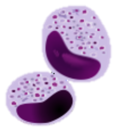

English abstract about the project

People plus crop, and livestock production play essential roles in the social and economic systems of Egypt,
but they are frequently subjected to the devastating effects of arthropod pests on health, productivity, welfaree,
and economy and as they damage agricultural crops, consume and/or damage harvested food, or transmit diseases to humans,
animals, and plants. Ticks and mosquitoes transmit more pathogens than any other group of blood-feeding arthropods as ehrlichiosis,
heartland virus, Lyme disease, Powassan disease, tularemia, and rickettsiosis, malaria, filariasis, dengue fever, yellow fever, West Nile,
Chikungunya, and Zika viruses.
Tomato leafminer spread quickly in all tomato growing areas in Egypt, destroying entire open fields and tomatoes
in green houses and invaded the other plants as potato and eggplant. Aphids extract phloem sap and transmit plant viruses and their excreta of help
in growth of sooty mould reducing crop yield and great economic losses. In fact, the misuse of pesticides lead to development of resistance, environmental
contamination, and residues in animal products, and building up high concentrations in the soil and aquatic system offering hazardous exposure of animals,
fish, and humans. As a result, the sustainability of reliance on conventional pesticide use for pest management is an increasingly challenging issue and
searching for reliable and safe alternatives is an urgent need. We proposed to apply ecofriendly pesticides. Despite their effectiveness, such alternatives
have short residual activity as they are volatile or photodegraded compounds and frequent reapplications may be needed, raising the cost and efforts of pest control. Consequently, the proposed project would examine methods for enhancing their residual efficacy and be sure that our alternatives are hazard free. The project has clear objectives as follows: First, controlling ticks, mesquites, leafminaers, and aphids, represented by Hyalomma dromedarii, Culex pipiens, Tuta absoluta, and Aphis craccivora, respectively, though screening three different sets of natural, reliable, and safe materials as essential oils, photosensitzers, and growth regulators, plus confirmation of their mechanism of action and persistence by investigating the impairment gene expression of some genes related to insect development, immunoresponce, and detoxification mechanisms. Second, formulations of the most effective materials to be more stable in the environment through loading on cheap materials as zeolites-LDH nanoparticles to increase stability and enhance the efficacy of the selected materials into efficient and cost effective materials that need to be registered and marketed. Third, testing the acute and chronic toxicity in rats and fish for the promising materials before and after formulation plus testing their safety and residues in milk after application in large animal farms. Fourth, evaluation of the real efficacy and persistence of the safest materials under different field conditions, as dairy farms, water pools, and green houses. The research proposed has the potential to contribute significantly to the economic development of Egypt where novel, inexpensive biopesticides would reduce the costs of plants and livestock rearing. Moreover, flourishing of organically produced animal and plant foods in Egypt improve human health and facilitates greater farmer’s acceptance of safer pesticides. Consequently, eco-friendly insecticides would reduce counting of conventional pesticides, save the environment, improve health of humans and animals, increase the amount and quality of exported food, and ultimately, improve the national economy and welfare.
الملخص العربي
مما لا شك فيه أن أنشطة الانسان بالإضافة إلى المحاصيل والإنتاج الحيواني يلعبوا دورًا أساسيًا في النظم الاجتماعية والاقتصادية لرفعة وتنمية بلدنا مصر، ولكنهم يتعرضون في كثير من الأحيان للآثار المدمرة للآفات الحشرية على الصحة والإنتاجية والاقتصاد والرفاهية، حيث أنها تضر المحاصيل الزراعية، وتستهلك العديد منها، وتعمل على تلف الأغذية والمحاصيل المخزونة؛ كما يتضح دورها الخطير فى نقل الأمراض إلى الانسان، الحيوانات والنباتات. ينقل القراد والبعوض العديد من الكائنات الممرضة أكثر من أي مجموعة أخرى من مفصليات الارجل التي تتغذي على الدم، مما تؤدى الى انتشار العديد من الامراض مثل: الفلاريا، الملاريا، ومرض زيكا، وحمى الضنك والصفراء وغرب النيل، والوادي المتصدع، والأنابيلازما، وحمى كولورادو القرادية، وحمى الجبال الصخرية المبقعة، ومرض اللايم، والحمى الراجعية............الخ. تم مؤخرا ملاحظة انتشار حشرة ناخرات أوراق الطماطم (توتا ابسلوتا) بسرعة في جميع مناطق زراعة محصول الطماطم بمحافظات مصر، ودمرت معظم حقول الطماطم المفتوحة والصوب الزراعية الخضراء، كما غزت النباتات الأخرى كالبطاطا والباذنجان والباميا. هذا وتتصدر حشرة المنّ الحشرات الاقتصادية إضراراً وتلفاً للنباتات، حيث أنها تمتص العصارة الخلوية للنبات، وتنقل العديد من فيروسات النبات، وتساعد فضلاتها الاخراجية في نمو العفن السخامي؛ مما يقلل من إنتاجية المحاصيل؛ وبتالى تتسبب في خسائر اقتصادية كبيرة. ونظرا لزيادة مقاومة الحشرات للمبيدات الكيميائية، وغياب الوعي العام بمخاطر استخدام المبيدات، ولأسباب الاجتماعية والاقتصادية؛ زادت كثافة الحشرات علاوة على سوء استخدام المبيدات، والتلوث البيئي، وارتفاع نسبة بقايا المبيدات في المنتجات الحيوانية، والتراكم تدريجى لتركيزات عالية في التربة والنظم المائية أادى إلى خطرًا حقيقياً على الثروة الحيوانية، والزراعية، والانسان؛ ونتيجة لذلك، فإن استدامة الاعتماد على الاستخدام التقليدي لمبيدات الآفات في المكافحة هي قضية تنطوي على تحديات متزايدة، وتعد عملية البحث عن بدائل مأمونة ورشيدة أصبحت حاجة ملحة وضرورية لسلامة المجتمع والبيئة. لذلك اقترحنا تطبيق بعض مبيدات الافات صديقة البيئة. وعلى الرغم من فعاليتها، فإن مثل هذه البدائل لها نشاط متبقي قصير؛ لأنها مركبات تتطاير أو تتحلل بالتعرض للضوءً، وقد تكون هناك حاجة ملحة إلى اعادة استخدامها؛ مما يرفع التكلفة والجهد فى مكافحة الآفات. وبالتالي فإن المشروع المقترح سوف يدرس طرقا جديدة لتعزيز فعاليتها المتبقية، والتأكد من أن بدائلنا خالية من المخاطر على البيئة. هذا، ويتضمن المشروع على أهداف واضحة على النحو التالي: أولاً: مكافحة القراد، والبعوض، وناخرات أوراق الطماطم، وحشرة المن، ممثلة في هيالوما دروميداري، وكيوليكس ببينز، وتوتا ابسوليوتا، وافيس كارسيفورا، على التوالي، بثلاث مجموعات مختلفة من المواد الطبيعية والموثوقة والآمنة، مثل: الزيوت العطرية، والمستحثات ضوئية، ومنظمات نمو، بالإضافة إلى تأكيد آلية عملهم ومدى ثباتهم من خلال التحقق فى التغير الجينى في بعض الجينات المرتبطة بتطوير مقاومة الحشرات، أو من خلال آليات المناعة وإزالة السموم. ثانياً:، تحضير المواد الأكثر فعالية لتكون أكثر كفاءة واستقرارا في البيئة من خلال تحميلها على مواد غير مكلفة مثل الجسيمات النانوية للزيوليت (zeolites-LDH) لزيادة الاستقرار وتعزيز فعالية المواد المختارة ضمن المواد ذات التكلفة الفعالة؛ التي تحتاج إلى تسجيل وتسويق. ثالثًاً: اختبار السمية الحادة والمزمنة في الجرذان والأسماك للمواد المختارة قبل التحميل وبعده، بالإضافة إلى اختبار سلامتها وبقاياها في الحليب بعد الاستخدامها في مكافحة القراد؛ الذي يصيب في مزارع الحيوانات الحلابة. رابعاً: تقييم الفعالية الحقيقية واستمرارية المواد المختارة الأكثر أمانًا في ظل الظروف الحقلية المختلفة، مثل: مزارع الحيوانات الحلابة، وبرك المياه، والصوب الخضراء. كما سيتم اختبار سمية هذه المواد ضد الكائنات الحية المرتبطة بها مثل الأسماك، وذلك لضمان سلامة هذه المستحضرات الجديدة للبيئة. وأخيرا، إن البحوث المقترحة لديها القدرة على المساهمة بشكل كبير في التنمية الاقتصادية لمصر؛ حيث أن المبيدات الحيوية الجديدة والغير مكلفة ستقلل من تكاليف تربية النباتات والماشية. وعلاوة على ذلك، فإن ازدهار تجارة الأغذية العضوية - الحيوانية والنباتية- المنتجة في مصر سوف يشجع قبول المزيد من المزارعين على استخدام مبيدات الآفات الأكثر أمانا؛ وبالتالى فإن المبيدات الحشرية الصديقة للبيئة سوف سوف تقلل من الاعتماد علي المبيدات الكيميائية المخلقة، وتحسن صحة الإنسان والحيوان، وتزيد من كمية ونوعية الأغذية المصدرة؛ مما يحافظ علي البيئة، ويسهم فى زيادة الرفاهية والاقتصاد القومي.